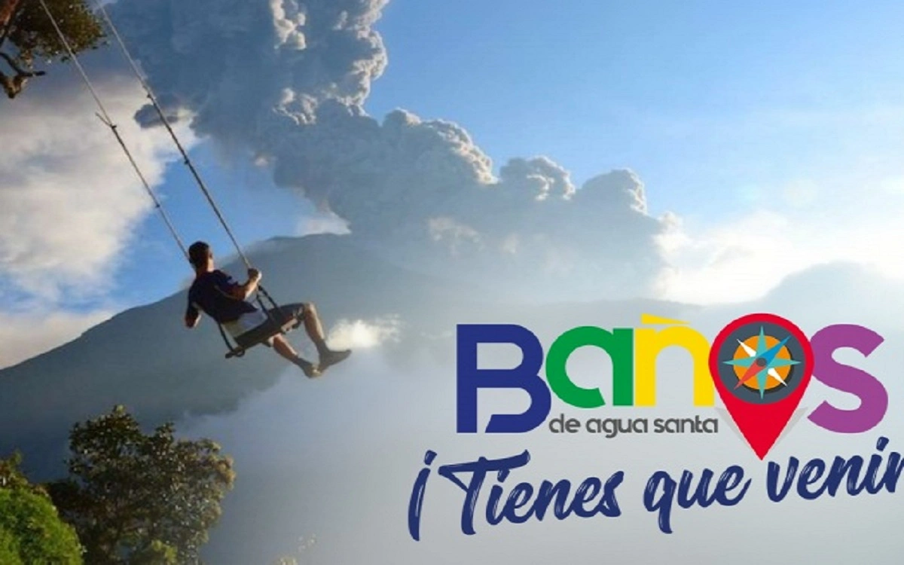

Cascadas de cuento
El Pailón del Diablo, la Cascada Manto de la Novia y decenas de saltos de agua más se reparten a lo largo de la Ruta de las Cascadas, entre Baños y Río Verde.
Baños de Agua Santa · Tungurahua
Somos una agencia local dedicada a mostrarte Baños de Agua Santa tal como lo vive quien nació aquí: cascadas escondidas entre la neblina, aguas termales que nacen del volcán Tungurahua y senderos que descienden hasta las puertas de la Amazonía.

SOBRE EL DESTINO
Baños de Agua Santa está a 1.820 metros de altura, en las faldas del volcán Tungurahua, en la provincia que lleva su mismo nombre. Es el último pedazo de sierra andina antes de que la carretera empiece a descender hacia la selva amazónica, y por eso los propios baneños la llaman «Pedacito de Cielo»: un lugar donde en un mismo día se puede subir a un mirador nevado, bañarse en agua termal y comer fruta amazónica recién cortada.
El cantón reúne cerca de setenta cascadas y varios complejos de aguas termales alimentados por el calor del volcán, además de una oferta consolidada de turismo de aventura: rafting en el río Pastaza, canyoning, puenting, ciclismo por la Ruta de las Cascadas y caminatas hacia miradores como la Casa del Árbol.
El Pailón del Diablo, la Cascada Manto de la Novia y decenas de saltos de agua más se reparten a lo largo de la Ruta de las Cascadas, entre Baños y Río Verde.
Las piscinas de aguas termales, encabezadas por las históricas Termas de la Virgen, se calientan con el mismo calor que alimenta al Tungurahua.
Columpios sobre el abismo, tarabitas, canopy y rutas en bicicleta convierten a Baños en la capital ecuatoriana del turismo de aventura.
NO TE LOS PUEDES PERDER
Una muestra de lo que te espera. La lista completa, con ubicación y actividad recomendada, está en la sección de lugares turísticos.

La cascada más famosa del Ecuador, con casi 80 metros de caída sobre el río Verde.

El famoso «columpio del fin del mundo», con el Tungurahua como telón de fondo.

Piscinas de aguas termales al pie de una cascada, en pleno centro de la ciudad.
Diseñamos tu recorrido con guías locales, transporte y las entradas a cada atractivo. Escríbenos y arma tu paquete a la medida.